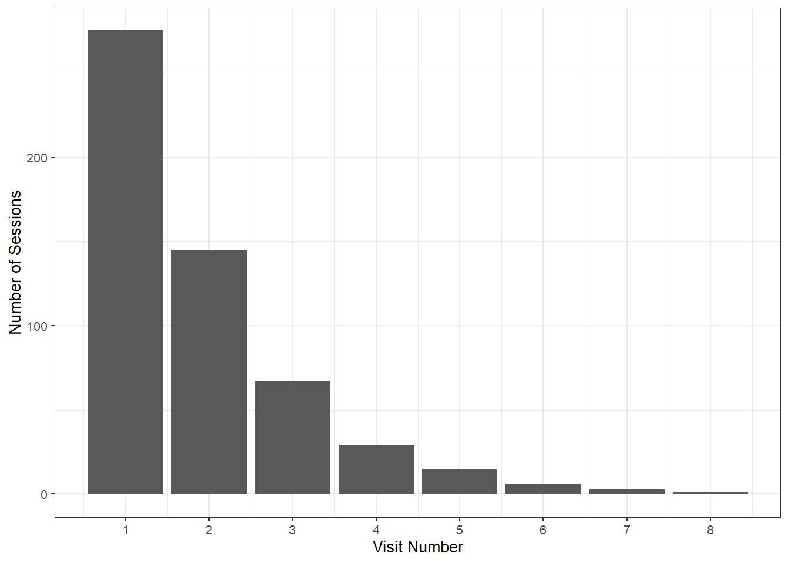
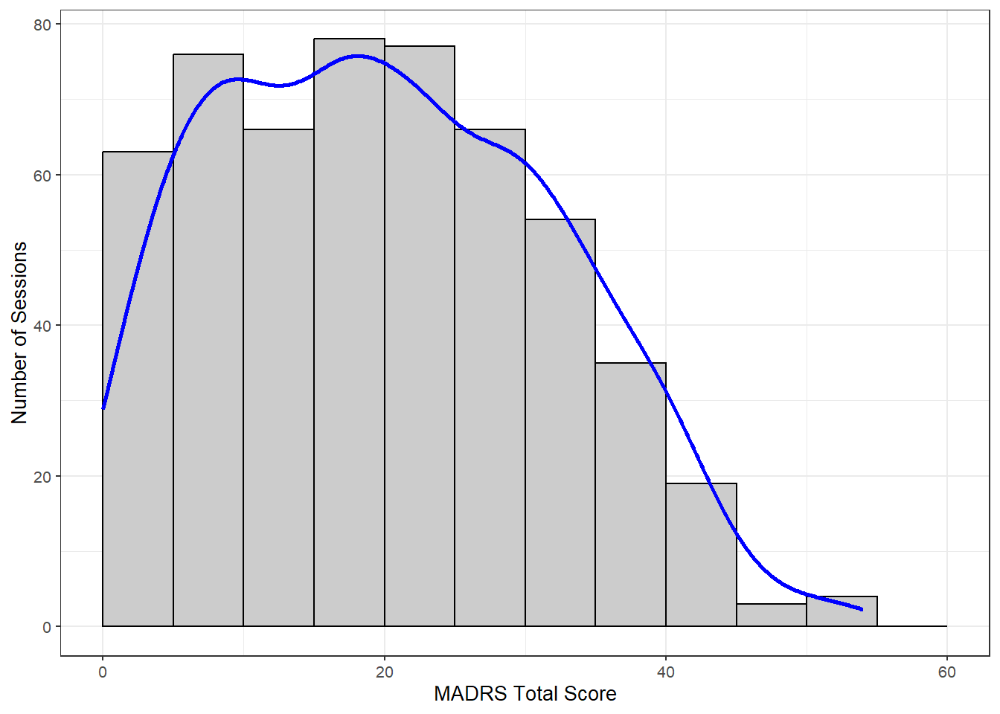

library(tidyverse)
library(datawizard)
library(kableExtra)Sample Demographics
# Sessions and human MADRS totals (NDA madrs01), and participant
# characteristics (NDA ndar_subject01)
source("load_data.R")
obs_raw <- load_prediction_sheets(conditions = "full")[[1]]
demo_raw <- load_subjects()Session Summaries
obs_tidy <-
obs_raw |>
select(
patient,
session,
visit_no,
madrs = ground_truth
) |>
summarize(
.by = c(patient, session, visit_no),
madrs = first(madrs)
)obs_tidy |>
describe_distribution(select = "madrs") |>
print_md()| Variable | Mean | SD | IQR | Range | Skewness | Kurtosis | n | n_Missing |
|---|---|---|---|---|---|---|---|---|
| madrs | 20.19 | 11.90 | 19 | (0.00, 54.00) | 0.28 | -0.73 | 541 | 0 |
obs_tidy |>
summarize(.by = patient, n_sessions = n()) |>
describe_distribution(select = "n_sessions") |>
print_md()| Variable | Mean | SD | IQR | Range | Skewness | Kurtosis | n | n_Missing |
|---|---|---|---|---|---|---|---|---|
| n_sessions | 1.95 | 1.25 | 1 | (1.00, 8.00) | 1.72 | 3.41 | 277 | 0 |
ggplot(obs_tidy, aes(x = visit_no)) +
geom_bar() +
scale_x_continuous(breaks = 1:8) +
labs(x = "Visit Number", y = "Number of Sessions") +
theme_bw(base_size = 10)
bin_width <- 5
n_obs <- nrow(obs_tidy)
ggplot(obs_tidy, aes(x = madrs)) +
geom_histogram(
breaks = seq(0, 60, bin_width),
color = "black",
fill = "grey80"
) +
geom_density(
aes(y = after_stat(density * n_obs * bin_width)),
color = "blue",
linewidth = 1
) +
labs(
x = "MADRS Total Score",
y = "Number of Sessions"
) +
theme_bw(base_size = 10)
Patient Summaries
demo_tidy <-
demo_raw |>
transmute(
patient,
diagnosis = fct_collapse(
diagnosis,
bipolar = c("BP1 (depressed)", "BP1 (hypomanic)", "BP1 (manic)", "BP1 (mixed)", "BP2 (depressed)", "BP2 (hypomanic)", "BP NOS"),
major_depressive = c("MDD", "MDD w/ psychosis"),
schizophrenia = "SZ",
schizoaffective = c("SZA (bp)", "SZA (dep)"),
psychosis_nos = "Psychosis NOS",
other = "Other"
),
sex = factor(sex),
race = fct_lump_prop(
race,
prop = 0.01
),
ethnicity = factor(ethnicity),
education = fct_na_value_to_level(
education,
level = "Prefer not to answer/Unknown"
),
age
) |>
filter(patient %in% unique(obs_tidy$patient)) |>
mutate(patient = factor(patient)) |>
summarize(
.by = patient,
across(everything(), first)
)demo_tidy |>
describe_distribution(select = "age") |>
print_md()| Variable | Mean | SD | IQR | Range | Skewness | Kurtosis | n | n_Missing |
|---|---|---|---|---|---|---|---|---|
| age | 39.78 | 14.34 | 26.50 | (18.00, 74.00) | 0.18 | -1.22 | 277 | 0 |
demo_tidy |>
data_tabulate(
select = c("sex", "race", "ethnicity", "education", "diagnosis")
) |>
print_md()| Variable | Value | N | Raw % | Valid % | Cumulative % |
|---|---|---|---|---|---|
| sex | Female | 120 | 43.32 | 43.32 | 43.32 |
| Male | 157 | 56.68 | 56.68 | 100.00 | |
| NR | 0 | 0.00 | 0.00 | 100.00 | |
| (NA) | 0 | 0.00 | (NA) | (NA) | |
| race | Asian | 10 | 3.61 | 3.61 | 3.61 |
| Black or African American | 32 | 11.55 | 11.55 | 15.16 | |
| More than one race | 5 | 1.81 | 1.81 | 16.97 | |
| White | 208 | 75.09 | 75.09 | 92.06 | |
| Other | 22 | 7.94 | 7.94 | 100.00 | |
| (NA) | 0 | 0.00 | (NA) | (NA) | |
| ethnicity | Hispanic or Latino | 36 | 13.00 | 13.00 | 13.00 |
| Not Hispanic or Latino | 234 | 84.48 | 84.48 | 97.47 | |
| Unknown or not reported | 7 | 2.53 | 2.53 | 100.00 | |
| (NA) | 0 | 0.00 | (NA) | (NA) | |
| education | Less than High School | 16 | 5.78 | 5.78 | 5.78 |
| High School/GED | 57 | 20.58 | 20.58 | 26.35 | |
| Part College or 2-year degree | 103 | 37.18 | 37.18 | 63.54 | |
| 4-year College degree | 50 | 18.05 | 18.05 | 81.59 | |
| Part or completed Graduate degree | 33 | 11.91 | 11.91 | 93.50 | |
| Prefer not to answer/Unknown | 18 | 6.50 | 6.50 | 100.00 | |
| (NA) | 0 | 0.00 | (NA) | (NA) | |
| diagnosis | bipolar | 85 | 30.69 | 30.69 | 30.69 |
| major_depressive | 96 | 34.66 | 34.66 | 65.34 | |
| other | 13 | 4.69 | 4.69 | 70.04 | |
| psychosis_nos | 20 | 7.22 | 7.22 | 77.26 | |
| schizophrenia | 17 | 6.14 | 6.14 | 83.39 | |
| schizoaffective | 46 | 16.61 | 16.61 | 100.00 | |
| (NA) | 0 | 0.00 | (NA) | (NA) | |